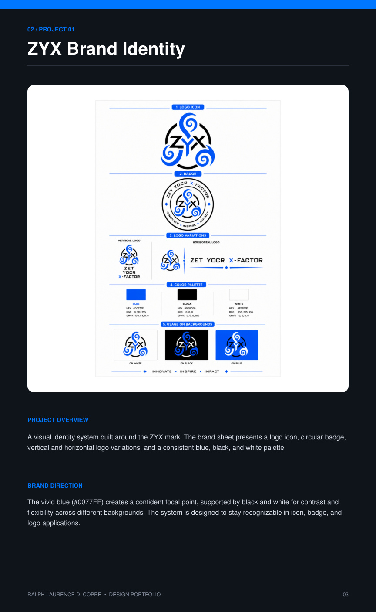
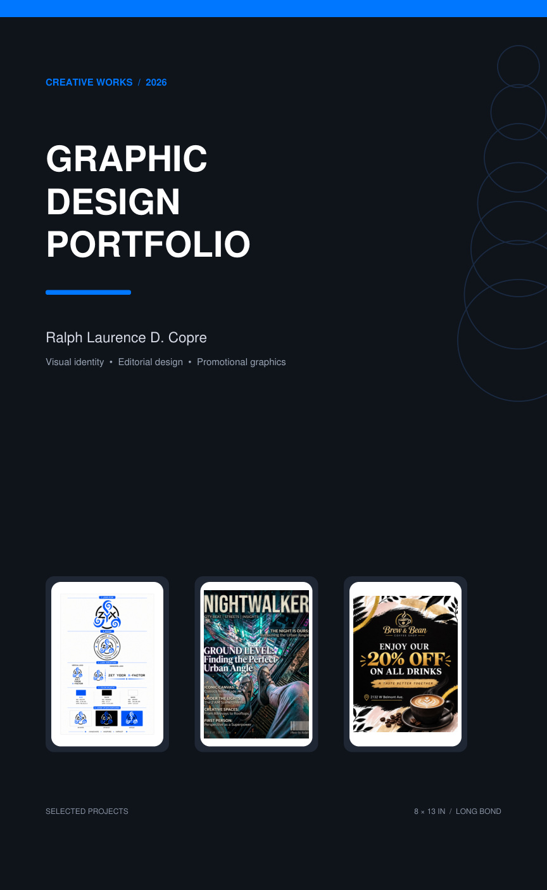
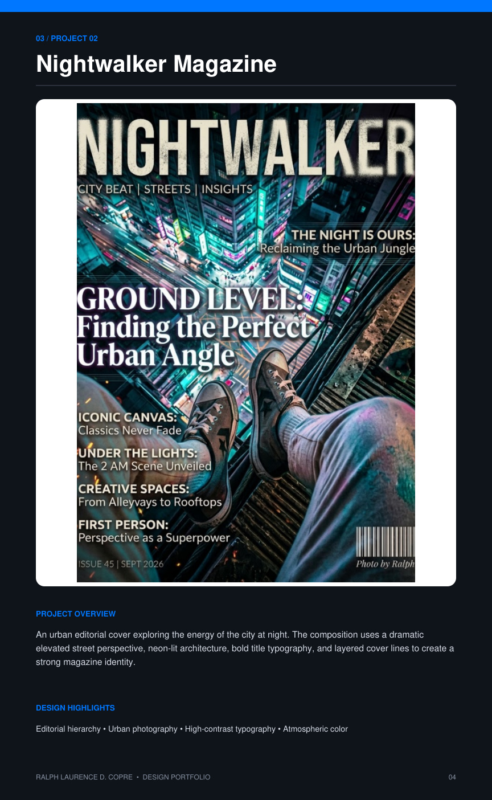
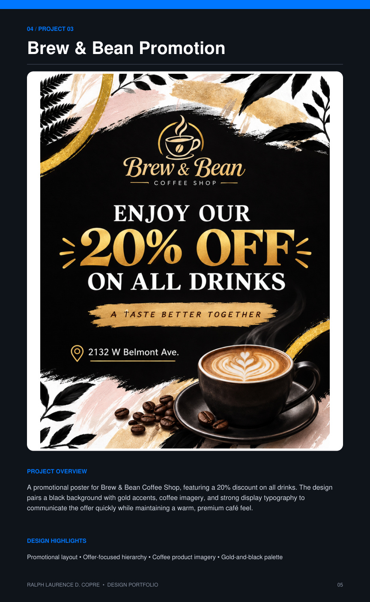

VIEW IMAGE ↗ZYX Brand Identity
A visual identity system built around the ZYX mark, with logo variations, a circular badge, and a consistent blue, black, and white palette.
AVAILABLE FOR CREATIVE PROJECTS
I'm Ralph Laurence D. Copre, a student graphic designer focused on visual identity, editorial design, and promotional graphics.

VISUAL STORIES · BRAND SYSTEMS · LAYOUTS01 / SELECTED PROJECTS
A selection of identity, editorial, and promotional design work.

VIEW IMAGE ↗A visual identity system built around the ZYX mark, with logo variations, a circular badge, and a consistent blue, black, and white palette.

VIEW IMAGE ↗An urban editorial cover using a dramatic city perspective, neon-lit architecture, and bold typography to capture the energy of the night.

VIEW IMAGE ↗A coffee shop promotional poster pairing a black-and-gold palette with clear offer-focused hierarchy and warm product imagery.
02 / A LITTLE ABOUT ME
I enjoy turning ideas into clear, engaging, and memorable visuals.
I'm Ralph Laurence D. Copre, a creative student designer interested in visual identity, layout composition, typography, and promotional materials. My approach combines experimentation with purpose—making each design communicate its message effectively.
From structured brand systems to editorial storytelling and promotional graphics, I aim to create work that feels considered, consistent, and easy to understand.
VIEW FULL PORTFOLIO PDF ↗03 / WHAT I DO
My current design interests and strengths.
Logo concepts, variations, and color systems
↗Composition, spacing, and visual hierarchy
↗Type pairing, scale, and readability
↗Campaign posters and offer-focused graphics
↗Magazine cover structure and visual storytelling
↗04 / HAVE A PROJECT IN MIND?